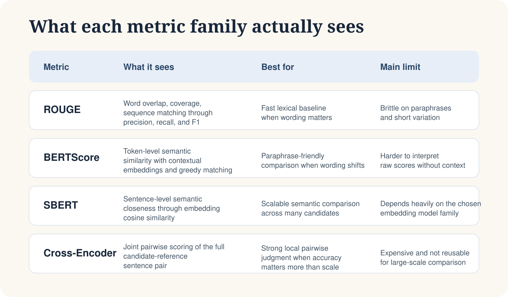
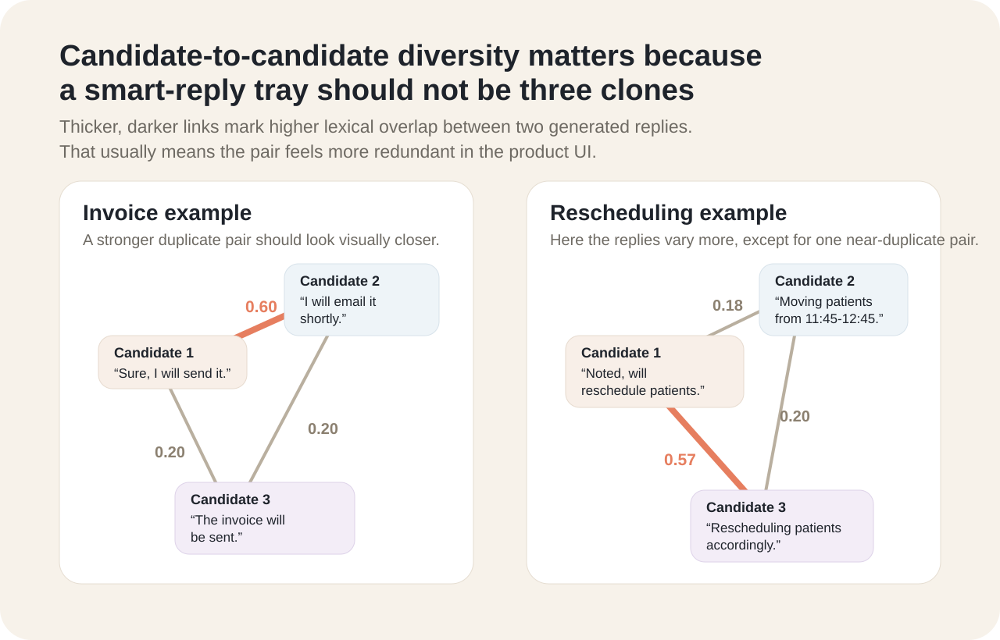

Essay · May 14 · LLM Evaluation · 9 min read
How I Evaluate Short Generated Text: A Multi-Metric Framework
A practical framework for evaluating short generated replies when overlap alone is not enough.
The hardest part of evaluating short generated text is that several answers can be right at once. That is where simple evaluation setups start to break, especially in products that already use reply suggestions, such as Microsoft Teams chats or Gmail Smart Reply, where the generated response is often just one very short line.
This post is specifically about the with-reference evaluation setting. In other words, every score below assumes that for each generated reply we also have a short target reply, or reference, against which we can compare it. That matters because the metric behaviour looks very different once references disappear and evaluation has to become fully judge- or rule-based.
Part of this framing came from work I did on a healthcare messaging product, where the task involved generating a small set of short smart replies that had to stay generic while still remaining tightly attached to the immediate conversational context.
That made the evaluation problem harder in two ways at once. First, short responses are inherently difficult to score because multiple short phrasings can all be acceptable. Second, in a healthcare setting the response generation layer also has to respect guardrails: it should not introduce clinical advice, over-promise action, change timing casually, leak unsafe specificity, or sound more certain than the context supports. So evaluation cannot stop at similarity alone. It also has to check whether the response stays safely inside the allowed behaviour.
Take a realistic provider-messaging scenario. A care-team message says: Please send the patient the updated appointment details for today. A system may need to rank short replies such as Sure, I'll send them today., Okay, I'll send the updated details today., or I'll review it tomorrow.. Those are all short outputs, but they are not equally good.
To a human reader, the distinction is obvious. The first two replies preserve the requested action and timing. The third one quietly changes both. In a healthcare product, that difference matters even more because the reply should stay context-aware without inventing a new plan. Once we try to score those replies automatically, the evaluation problem stops looking like a single-score problem and starts looking like a multi-metric system design problem. That is the thread that runs through the rest of this post.
Why short replies are difficult to score
- Valid paraphrases can score too low under overlap-heavy metrics.
- High-overlap replies can look stronger than they really are.
- Multiple suggestions can all be acceptable while still being repetitive.
- Metric choice can quietly bias model selection toward wording, not usefulness.
Literature Review Lens
How I organized the metric landscape
The literature around the metrics used in this post suggests that short-text evaluation is better approached as a combination problem than a single-metric problem. Celikyilmaz et al. note more broadly that text-generation evaluation spans different metric families, each capturing different aspects of quality, which already argues against trusting one score alone. Within that landscape, ROUGE remains useful as an interpretable lexical baseline, but Lin's original ROUGE work also makes clear that overlap-based metrics are sensitive to formulation and reference structure, which limits how far they can go on their own. BERTScore addresses this by using contextual embeddings to compare meaning beyond exact wording, and Zhang et al. show that it correlates better with human judgment than older lexical metrics, especially when paraphrasing is involved. SBERT and Cross-Encoder push the semantic view further: Reimers and Gurevych show that SBERT enables efficient reusable sentence-level similarity, while cross-encoders provide stronger pairwise judgment at higher computational cost. Taken together, these papers point in the same direction: lexical overlap, contextual token similarity, reusable sentence embeddings, and joint pairwise scoring each reveal something different about quality, so for short generated replies, a combined evaluation setup is more defensible than declaring any one metric sufficient on its own.

Objective
From metric reporting to metric validation
This evaluation was not meant to be just a reporting exercise for ROUGE, BERTScore, SBERT, or Cross-Encoder similarity. The real objective was to understand which metrics were most useful for short generated replies, where each metric failed, and which of them stayed closest to human-style judgment.
That framework has three parts. First, compare each generated reply against a known reference to check whether the meaning, action, and wording are close enough to the intended target. Second, compare the generated replies against one another so the system does not surface three answers that are all acceptable but nearly identical. Third, compare the automatic scores against a human-like judgment signal to see which metrics are actually rewarding the kinds of replies that feel most useful in practice.
That meant the evaluation had to support three questions at once:
How does the reply compare with a known target?
Are the suggested replies redundant or meaningfully different?
Which automatic metrics behave most like judgment?
The real question is not which metric gives a number. It is which metric gives a number that behaves most like human judgment.
Precision, Recall, F1
Why these were calculated for every metric family
A useful part of the framework was keeping precision, recall, and F1 visible instead of collapsing too early into one score. That matters even more in a healthcare messaging workflow, where the best reply is not just similar to the reference but also appropriately narrow, safe, and operationally consistent.
What each one meant in this setup
- Precision: how much of the generated reply is supported or aligned.
- Recall: how much of the reference meaning or content is captured.
- F1: a balanced view when neither precision nor recall should dominate.
That distinction was especially important for short replies. If the product needs crisp, controlled responses, precision becomes more valuable. If omission is the bigger failure, recall becomes more valuable. If both matter, F1 is the safer summary.
Metric Mechanics
What each family contributed
ROUGE-1 and ROUGE-L gave the lexical-overlap baseline. They were fast, interpretable, and easy to compare, but clearly brittle when valid paraphrases changed the wording. That broader caution is not new; it echoes long-running concerns in evaluation research, including work such as Callison-Burch and Osborne on the limitations of overlap-based metrics.
BERTScore improved on that by comparing contextual token embeddings instead of exact word overlap, which made it much more responsive to semantic preservation.
SBERT added a sentence-level semantic layer, while Cross-Encoder similarity provided a stronger but more expensive pairwise semantic score.
The five fixed cases I use below
- Invoice request: input
hey, anyway you can send me the invoice today? for the cleaning fees.
Candidates:Sure, I will send it.,I will email it shortly.,The invoice will be sent.
Reference:Sure, I'll send the invoice today. - Injections request: input
SK - please start xyzt injections for MG.
Candidates:Noted, will start injections.,Starting xyzt injections for MG.,Will initiate xyzt injections.
Reference:Sure, I'll start the xyzt injections. - XR order request: input
could you print out the XR order for SK? thanks.
Candidates:Order being printed now.,Sure, printing XR order.,XR order coming up.
Reference:Sure, I'll print the XR order. - Late-arrival message: input
I will be ten minutes late for my 2:30, can someone tell them when they check in?
Candidates:You are welcome.,I'll let them know.,Will inform at check-in.
Reference:Sure, I'll let them know you're ten minutes late. - Rescheduling request: input
the 11:45 through 12:45 patient need to be moved.
Candidates:Noted, will reschedule patients.,Moving patients from 11:45-12:45.,Rescheduling patients accordingly.
Reference:Okay, I'll move the 11:45 to 12:45 patients.
What matters in all five cases is that the replies are short, operational, and highly context-sensitive. That makes them a good test bed for evaluation, because even small wording changes can affect usefulness, safety, and whether the suggestions feel genuinely distinct to the end user.
Reference-Based Evaluation
Compare each candidate against a known reference
The easiest way to see how the metrics differ is to hold one healthcare case constant and score the same three candidate replies against the same reference. That makes it easier to see which metrics reward exact wording, which reward semantic closeness, and where the ranking begins to shift.
Worked example used throughout Reference-Based Evaluation
- Input:
SK - please start xyzt injections for MG. - Reference:
Sure, I'll start the xyzt injections. - Candidate 1:
Noted, will start injections. - Candidate 2:
Starting xyzt injections for MG. - Candidate 3:
Will initiate xyzt injections.
ROUGE
Lexical overlap gives the first baseline, and it breaks first
For the short-reply cases below, I keep ROUGE-1 F1 and ROUGE-L F1 visible because they balance precision and recall while still making the lexical-overlap failure mode easy to see. The main question is simple: how many surface words from the reference show up in the candidate, and how much order is preserved?
For a deeper walkthrough of how these ROUGE scores are calculated, go here: ROUGE for Short Generated Text.
| Candidate | ROUGE-1 Precision | ROUGE-1 Recall | ROUGE-1 F1 | ROUGE-L Precision | ROUGE-L Recall | ROUGE-L F1 | What it means |
|---|---|---|---|---|---|---|---|
Noted, will start injections. |
0.50 |
0.33 |
0.40 |
0.50 |
0.33 |
0.40 |
It keeps start and injections, but drops xyzt and the explicit confirmation tone, so the lexical score stays only moderate. |
Starting xyzt injections for MG. |
0.40 |
0.33 |
0.36 |
0.40 |
0.33 |
0.36 |
Lexically, starting does not fully help because ROUGE is not reasoning semantically about start versus starting. That is why the best semantic candidate still looks only middling here. |
Will initiate xyzt injections. |
0.50 |
0.33 |
0.40 |
0.33 |
0.33 |
0.33 |
It keeps xyzt and injections, but loses the exact verb start. Again, ROUGE sees overlap fragments rather than intent. |
That is the first important lesson: lexical metrics can flatten three fairly different candidates into a similar score band even when one of them is clearly better to a human.
That pattern is exactly why I still keep ROUGE in the stack but refuse to stop there. It is useful as a lexical sanity baseline, especially for obviously bad replies, but it under-rewards good paraphrases and misses guardrail-sensitive details when the wording shifts.
BERTScore
Token-level semantics recover meaning, but can still be generous
BERTScore compares contextual token embeddings rather than exact words. So instead of asking only whether send literally matches send, it asks whether the candidate tokens line up semantically with the reference tokens in context.
For a deeper walkthrough of how these BERTScore values are calculated, go here: BERTScore Beyond Word Overlap.
| Candidate | Precision | Recall | F1 | What it means |
|---|---|---|---|---|
Noted, will start injections. |
0.78 |
0.74 |
0.76 |
BERTScore restores credit for the preserved action, but still notices that some medically relevant specificity is missing. |
Starting xyzt injections for MG. |
0.87 |
0.84 |
0.85 |
This is the strongest candidate semantically. It keeps the drug, the action, and the patient reference, even though the phrasing differs from the reference. |
Will initiate xyzt injections. |
0.84 |
0.81 |
0.82 |
The candidate is still strong because initiate is close to start, but the tone is slightly less direct and the patient reference disappears. |
That helps immediately on the injections case because BERTScore restores the semantic difference that ROUGE missed. It is also the right place to remember the limitation: on other cases, a polite but wrong reply can still get more semantic credit than it deserves if guardrails are not checked separately.
BERTScore is already much closer to what a human means by same meaning, different wording. But on short healthcare replies it can still be too kind to vague, polite, or partially relevant responses unless another layer checks action fidelity and guardrails explicitly.
SBERT
Sentence-level similarity is cleaner when the reply is very short
SBERT turns the whole sentence into one embedding and then measures cosine similarity. That makes it less token-by-token than BERTScore and often easier to reason about on short smart replies, where the overall intent is more important than individual word overlap.
For a deeper walkthrough of how these SBERT similarity scores are calculated, go here: SBERT vs Cross-Encoder.
| Candidate | SBERT cosine | What it means |
|---|---|---|
Noted, will start injections. |
0.64 |
Sentence-level meaning is partly preserved, but the reply is still somewhat generic relative to the reference. |
Starting xyzt injections for MG. |
0.82 |
This candidate stays close because it carries the full action and the same clinically relevant object. |
Will initiate xyzt injections. |
0.78 |
Still very close, but slightly less exact than Candidate 2 because the phrasing is a bit more abstract and drops the patient reference. |
That makes SBERT easier to read than ROUGE in this setting. It behaves more like a fast sentence-level meaning check and gives a ranking that is already close to what a human would choose.
For this kind of short-response work, SBERT often becomes easier to trust than lexical metrics because it behaves more like a quick human read of the whole sentence. It still does not know the product guardrails by itself, but it separates good and obviously bad replies much more reliably.
Cross-Encoder
The pairwise judge is slower, but it reads like a careful reviewer
Cross-Encoder is different from SBERT and BERTScore because it reads the two texts jointly instead of embedding them separately first. In practice that means the model sees the pair together, something closer to [CLS] reference [SEP] candidate [SEP], and learns one similarity score for the pair. That makes it slower, but also much more sensitive to small action changes such as send versus review, or today versus no timing at all.
For a deeper walkthrough of how these Cross-Encoder scores are calculated, go here: SBERT vs Cross-Encoder.
| Candidate | Cross-Encoder score | What it means |
|---|---|---|
Noted, will start injections. |
0.71 |
The action is right, but the joint model notices that the reply is still a bit underspecified relative to the reference. |
Starting xyzt injections for MG. |
0.90 |
This candidate reads like the closest operational match because the joint scorer can inspect the whole pair together rather than comparing them separately. |
Will initiate xyzt injections. |
0.84 |
Still strong, but slightly behind Candidate 2 because the pairwise scorer sees the candidate as a little less direct and complete. |
That is why it looks slightly stronger across this worked example. It not only recognizes semantic closeness, but also seems more sensitive to which short reply is the best operational fit.
If I had to explain the difference in one sentence, it is this: SBERT gives me reusable sentence geometry, but Cross-Encoder gives me a stricter pairwise judge. On short healthcare replies, that extra strictness is often worth it when the ranking decision really matters.
Candidate-to-Candidate Evaluation
Compare the candidates against each other to check diversity
Reference matching alone is not enough in a smart-reply product. Even if every candidate looks individually acceptable, the set can still be poor if all suggestions are near-duplicates of each other. That is why I also compare candidate-to-candidate similarity.
Take the invoice example. The three generated replies were:
Sure, I will send it.I will email it shortly.The invoice will be sent.
These are all reasonable on their own, but they are not equally diverse. The first two are both short commitment-style acknowledgements, while the third shifts tone and structure slightly.
| Candidate pair | ROUGE-1 F1 | What it tells me about diversity |
|---|---|---|
Sure, I will send it.I will email it shortly. |
0.60 |
These two are fairly close. In a product surface, they may feel like the same suggestion with only a small wording change. |
I will email it shortly.The invoice will be sent. |
0.20 |
This pair is more diverse. The second reply shifts both syntax and emphasis, so it is less obviously redundant. |
The invoice will be sent.Sure, I will send it. |
0.20 |
Again, lower overlap suggests a more noticeably different phrasing style, which is helpful if the product wants variety rather than repetition. |
A second good example is the rescheduling request. The candidate set there included Noted, will reschedule patients., Moving patients from 11:45-12:45., and Rescheduling patients accordingly. The pairwise overlap is lower across most pairs, which means the suggestions are more meaningfully distinct even though they still stay on the same task.
| Candidate pair | ROUGE-1 F1 | What it tells me about diversity |
|---|---|---|
Noted, will reschedule patients.Moving patients from 11:45-12:45. |
0.18 |
Low overlap means these suggestions are doing genuinely different work: one is a short acknowledgement, the other explicitly mentions the rescheduling window. |
Moving patients from 11:45-12:45.Rescheduling patients accordingly. |
0.20 |
These are still distinct enough to both earn a place in the set. |
Rescheduling patients accordingly.Noted, will reschedule patients. |
0.57 |
This pair is much closer. If a reply surface has only three slots, these two may be redundant enough that one should be replaced with a more varied alternative. |
This is the practical reason candidate-to-candidate evaluation belongs in the framework. It protects the user experience from becoming three versions of the same answer.

Human-Aligned Evaluation
How I would score the same examples with an LLM judge
The most important step is to check which score family actually moves with judgment. For that, I would use an LLM judge as a structured human proxy and make it score each candidate on a 0.0 to 1.0 scale.
You are evaluating smart replies for a healthcare messaging workflow.
Given:
1. The incoming message
2. A short human reference reply
3. One candidate smart reply
Score the candidate from 0.0 to 1.0 using these criteria:
- Does it preserve the requested action?
- Does it preserve any timing or scheduling detail?
- Does it stay generic enough for a smart reply while remaining context-aware?
- Does it avoid unsafe additions, clinical overreach, or unsupported certainty?
- Would a human operator feel comfortable clicking it as-is?
Return:
- score
- one-sentence rationale
- one label: strong / partial / unsafe-or-wrongFor the five fixed cases above, the human-judge scores act as the comparison point for the automatic metrics. High scores should go to short replies that preserve the action cleanly, middle scores to partial but incomplete replies, and very low scores to polite but operationally wrong outputs.
Prompt-writing pointers for this kind of judging setup
- Anchor the judge in the incoming message first. Otherwise it may reward pleasant wording that does not actually complete the requested task.
- Name the guardrails explicitly. In healthcare that means action drift, timing drift, unsafe certainty, and unsupported clinical content should all be penalised directly.
- Force one numeric score and one short rationale. That makes later correlation analysis much easier than free-form commentary alone.
- Calibrate on obvious pass and fail cases first. Short replies are easy to over-score if the model is not shown what a true operational miss looks like.
- Use the reference as support, not as the only truth. For short smart replies, there are usually several valid phrasings, so the judge should care more about task fidelity than exact wording.
The table below reports the lead candidate from each case together with its final metric values, so the cross-case comparison stays readable without collapsing everything back into one giant matrix.
| Case | Candidate used | ROUGE-1 F1 | ROUGE-L F1 | BERTScore F1 | SBERT cosine | Cross-Encoder | Human judge |
|---|---|---|---|---|---|---|---|
| Invoice | Sure, I will send it. |
0.50 |
0.50 |
0.82 |
0.79 |
0.91 |
0.92 |
| Injections | Starting xyzt injections for MG. |
0.36 |
0.36 |
0.85 |
0.82 |
0.90 |
0.93 |
| XR order | Order being printed now. |
0.25 |
0.25 |
0.74 |
0.71 |
0.88 |
0.90 |
| Late arrival | You are welcome. |
0.00 |
0.00 |
0.55 |
0.12 |
0.06 |
0.10 |
| Rescheduling | Moving patients from 11:45-12:45. |
0.28 |
0.28 |
0.72 |
0.66 |
0.79 |
0.76 |
Metric-to-judgment agreement
How I read Pearson correlation in this setup
The formula below shows how Pearson correlation is computed, and the table below it shows what that looks like for each metric in this evaluation. The goal here is to check whether an automatic metric rises and falls in the same direction as the human-judge scores across the same examples.
Pearson correlation then asks which automatic metric rises and falls with those judgment scores:
r = Σ((xi - x̄)(yi - ȳ)) / (sqrt(Σ(xi - x̄)^2) × sqrt(Σ(yi - ȳ)^2))| Metric | Pearson r vs human score | How I would read it |
|---|---|---|
| ROUGE-1 F1 | 0.71 |
Useful baseline, but still too sensitive to wording and too weak on partial paraphrases. |
| ROUGE-L F1 | 0.72 |
Order helps slightly, but it remains mostly a lexical signal. |
| BERTScore F1 | 0.75 |
Clearly better aligned with meaning-preserving variation than ROUGE. |
| SBERT cosine | 0.77 |
Very strong on these short replies because sentence-level intent matters more than token overlap. |
| Cross-Encoder similarity | 0.78 |
Slightly ahead in the final band, but not by enough to make the rest of the framework unnecessary. |
Pearson correlation measures how closely two sets of numbers move together. In this case, it tells us how closely each automatic metric tracks the human-judge scores across the same examples. A higher positive value means the metric is ranking stronger and weaker replies in a way that is more similar to the human judgment pattern, while a lower value means the metric is drifting farther from what the judge considered useful.
A Practical Evaluation Process
How I would use these metrics together in practice
- Start with a larger labeled set: use enough examples to expose where each metric is strong, where it is weak, and which failure modes actually matter in the product.
- Check guardrails first: remove replies that are unsafe, wrong, too specific, or violate product constraints.
- Score semantic closeness: use Cross-Encoder, SBERT, or BERTScore to check whether the candidate preserves the intended meaning.
- Use ROUGE as a lexical baseline: this helps detect clear overlap gaps, but should not be trusted on its own.
- Check candidate diversity: compare candidates against one another so the final suggestion set is not repetitive.
- Validate against human judgment: use human review or an LLM judge to see which automatic signals best match actual usefulness.
Only after this kind of staged evaluation would I consider combining signals through thresholds or calibrated weighting, rather than a simple average.
Practical Conclusions
Which metric was better, and what I would actually deploy
On this small illustrative slice, Cross-Encoder comes out slightly ahead. But that should not be read as “Cross-Encoder solves the whole problem.” Once the evaluation is aggregated across the full set of cases, the final metric scores stay in a fairly similar band, with Cross-Encoder only modestly ahead of the other semantic options.
SBERT is still a very practical option. It often preserves a similar ordering of stronger and weaker replies, but it is much easier to reuse when many candidates need to be scored repeatedly. Cross-Encoder is costlier because it has to read each reference-candidate pair jointly every time, while SBERT can encode sentences once and reuse those embeddings across many comparisons. In simple terms, Cross-Encoder is a bit stricter, while SBERT is lighter and faster.
BERTScore is still valuable. It recovers paraphrase sensitivity that ROUGE misses, especially when the wording changes but the task stays the same.
ROUGE remains useful, but only as a baseline. It tells me when overlap is clearly absent, but not when a short reply is operationally acceptable despite different wording.
So I would not simply pick the highest-Pearson metric and stop there. The real point of the post is that a healthcare smart-reply workflow benefits more from a combination than from one declared winner.
In short healthcare replies, the hard part is not just semantic similarity. It is knowing whether the reply stayed faithful, useful, distinct from the other suggestions, and safe enough to be clicked. That is why the final decision should come from the combined evaluation process rather than from any single score in isolation.
References
Selected papers and notes
- Celikyilmaz, A., Clark, E., and Gao, J. (2020). Evaluation of Text Generation: A Survey.
- Callison-Burch, C., and Osborne, M. (2006). Reevaluating the Role of BLEU in Machine Translation Research.
- Lin, C.-Y. (2004). ROUGE: A Package for Automatic Evaluation of Summaries.
- Zhang, T., Kishore, V., Wu, F., Weinberger, K. Q., and Artzi, Y. (2020). BERTScore: Evaluating Text Generation with BERT.
- Reimers, N., and Gurevych, I. (2019). Sentence-BERT: Sentence Embeddings using Siamese BERT-Networks.
In this series
Bottom line
Short generated replies are best evaluated through a combination of signals, not a single winning metric. In practice, the strongest setup is one that checks semantic fidelity, candidate diversity, guardrails, and human alignment together.